compass-canvas
Canvas drawing support for Compass with Cairo backend(s)
Description
Canvas is a Compass plugin that provides a drawing surface similar to the <canvas> element in JavaScript and Turtle graphics in other programming languages.
It uses Cairo as a back-end to perform all graphics operations.
Canvas supports anti-aliasing, vector graphics, gradients, masks, clipping, complex operations like drop shadow and many more.
Installation
Installation is done through RubyGems:
gem install compass-canvas
Dependencies
The compass-canvas gem depends on the cairo gem. In order to install both gems, you must have Cairo's development files present on your system.
You can usually install these using your OS package manager.
Ubuntu
sudo apt-get install libcairo2-dev
Example
@import 'canvas';
$shape: triangle(10, 10, 310, 10, 160, 190);
html {
background: canvas(320, 200,
$shape
brush(10, 10, 160, 100, rgba(red, 0.5) 50%, rgba(red, 0.75))
fill
reset
save
translate(40, 20)
scale(0.75, 0.75)
$shape
brush(black)
stroke
brush(10, 10, 160, 100, rgba(blue, 0.75) 50%, rgba(blue, 0.5))
fill
restore
) no-repeat 50% 50%;
}
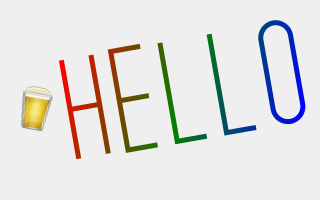
License
Canvas is licensed under the MIT License.
Documentation
Usage
To start a new Compass project with Canvas included:
compass create -r canvas ...
To use Canvas within your existing project, require the plugin from your Compass configuration (config.rb):
require 'canvas';
Concepts
Every drawing operation is done on a surface. A surface is an area defined by (0, 0) x (width, height). Initialising a new canvas creates an empty surface (if you were to save it to disk, it would be completely transparent).
@import 'canvas';
html {
background: canvas(320, 200);
}
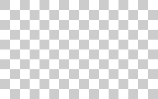
Paths
Before you can put any colours on your canvas, you need to define where and how you want to draw. This is done by creating paths. Paths are a series of motions describing a shape. Imagine a rectangle. If you were to take a piece of paper and sketch it, you would draw four lines. The easiest and fastest approach is to pick an edge, put the pen down, move it across to draw one of the lines, then move it in a different direction to draw a second line and so forth until the shape is complete.
Creating paths in Canvas is similar - you pick a starting point, define the shape through a series of motions and close the path. Here is how you would define a rectangle:
@import 'canvas';
html {
background: canvas(320, 200,
move-to(10, 10) // start at top-left
line-to(310, 10) // line to top-right (red)
line-to(310, 190) // line to bottom-right (green)
line-to(10, 190) // line to bottom-left (blue)
close // close the rectangle, i.e., line to top-left (hot pink)
);
}
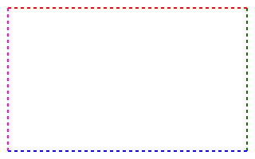
There is only one path primitive in Canvas - a line. While this may seem strange, lines can be curved as well allowing you to build more complex objects. There are five basic functions for describing a path:
move-to- starts a new path at coordinatesXandYon the surfaceline-to- creates a straight line between the current point andXandY, moves the current point toXandYcurve-to- same as above, but the line is curvedarcandarc-reverse- same as above, but defined of many curved lines to form an arc
Combining these functions allows you to build complex objects like circles, stars, polygons and many more:
@import 'canvas';
html {
background: canvas(320, 200,
move-to(10, 100) // hat, start at bottom-left
line-to(100, 100) // hat, line bottom-left (red)
arc-reverse(160, 100, 60, 180, 0) // face (green)
line-to(310, 100) // hat, line bottom-right (blue)
line-to(160, 10) // hat, line top-right (hot pink)
close // hat, line top-left (cyan)
move-to(120, 110) // left eye (brown)
line-to(140, 110)
arc-reverse(130, 110, 10, 180, 0)
move-to(180, 110) // right eye (orange)
line-to(200, 110)
arc-reverse(190, 110, 10, 180, 0)
);
}
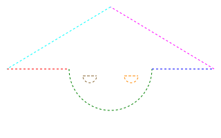
Brushes
Once you have your basic shapes defined, your next step is to draw them.
Brushes define how a shape will be drawn on the surface.
Canvas supports the most common ones - solid colour, linear gradient and radial gradient.
The only relevant function is brush which defines and sets the brush for the next drawing operation:
@import 'canvas';
html {
background: canvas(320, 20,
brush(red)
);
}
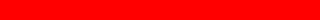
Drawing
If you have tried any of the examples so far, you would notice they don't put anything on the canvas surface, i.e., it remains transparent. The reason for this is that paths and brushes are just instructions. Paths are transparent and brushes configure what colour or pattern the next drawing operating will be using.
There are two functions that combine paths and brushes to draw the shape on the canvas surface:
stroke- outlines the current path with the configured brushfill- fills the region defined by the current path with the configured brush
There is one additional action paint which applies the configured brush to the entire surface. This is useful if you would like to start with a canvas that is not transparent.
Note paint is not a function, i.e., you don't use parentheses () after it.
Let's draw the rectangle from earlier:
@import 'canvas';
html {
background: canvas(320, 200,
brush(#ccc)
paint
move-to(10, 10)
line-to(310, 10)
line-to(310, 190)
line-to(10, 190)
close
brush(yellow)
fill
brush(black)
stroke
);
}
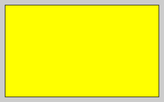
Saving to Disk
The canvas function has several overloads. In its default form, it takes width and height.
The final canvas is serialized as Base64 encoded Data URI.
Most modern browsers will be happy with this. However, if you have to support Internet Explorer 7 or if you are planning on using sprites, you would want the data saved on disk.
Simply pass a filename as the first argument to the canvas function and the image will be saved in your configured images directory.
Wrap the code in image-url to have the correct relative path and cache buster applied.
@import 'canvas';
html {
background: image-url(canvas('file.png', 320, 200,
brush(#ccc)
paint
));
}
Paths revised
Now that you know how to define and draw a single shape, let's talk more about paths.
Canvas ships with several useful functions for drawing common shapes:
You can define your own as Sass functions. The return result of the function must be a list of Canvas operations.
@import 'canvas';
@function my-shape($x, $y) {
@return (
move-to($x - 50, $y - 50)
line-to($x + 50, $y - 50)
line-to($x + 50, $y + 50)
close
);
}
html {
background: canvas(320, 200,
my-shape(150, 90)
brush(black)
stroke
);
}
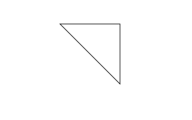
Initialising a new canvas instance creates a new, empty path. Every Canvas operation (move-to, line-to, etc.) is applied to this default path.
The following may have a surprising result:
@import 'canvas';
html {
background: canvas(320, 100,
rectangle(10, 10, 100, 30)
brush(red)
fill
rectangle(40, 50, 130, 70)
brush(blue)
fill
);
}
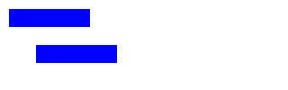
In the example above, both rectangles are considered to be part of the same path. The first call to fill therefore draws the first rectangle in red and the second call to fill draws both rectangles in blue.
To split paths in separate shapes, use the reset action to start a new path.
@import 'canvas';
html {
background: canvas(320, 100,
rectangle(10, 10, 100, 30)
brush(red)
fill
reset // start a new path
rectangle(40, 50, 130, 70)
brush(blue)
fill
);
}
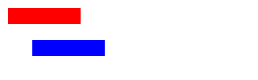
Single-pixel-wide Paths
In many of the examples above, the default line width of 1px is used, however lines may look slightly thicker:
@import 'canvas';
html {
background: canvas(320, 100,
rectangle(10, 10, 310, 90)
stroke
);
}
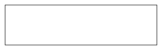
The reason this happens is easy to explain to someone who believes pixels are little squares. By default, integer coordinates map to the intersections of the pixel squares. So a width-1 horizontal/vertical line is centered on the boundary between pixel rows and extends half way into the pixels on either side.
When some people hear pixels described as little squares it sets their teeth on edge. For them we have this alternate explanation. By default, integer coordinates map to points half way between sample point locations. So a width-1 horizontal/vertical will be centered between two rows of pixel sample points and will contribute equally to the pixels on either side, (assuming a symmetric filter which is always the case when synthesizing images in cairo).
[..] If you [..] want to light up a single row of pixels at full intensity, you can do that by adjusting the endpoints by 0.5 in the appropriate direction.
@import 'canvas';
html {
background: canvas(320, 100,
rectangle(10.5, 10.5, 310.5, 90.5) // adjusted by .5
stroke
);
}
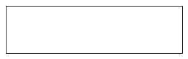
Brushes revised
Linear Gradients
Linear gradients are constructed from two points which determine the direction of the pattern.
For example, a vertical gradient would be defined by two points (0, 0), (0, 100), i.e., x remains unchanged (in both points it's zero).
A horizontal gradient therefore can be defined by (0, 0), (100, 0), i.e., y remains unchanged.
A diagonal gradient is defined by two points where x1 <> x2 and y1 <> y2.
Linear gradient are constructed with the brush function which now takes a different form:
@import 'canvas';
html {
background: canvas(320, 100,
brush(
0, 0, // x1 and y1, the start point of the gradient
0, 100, // x2 and y2, the end point of the gradient
// x1 == x2 therefore this is a vertical gradient
#f00, #0f0, #00f // colour stops
)
paint
);
}
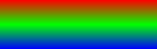
@import 'canvas';
html {
background: canvas(100, 100,
brush(
0, 0, // x1 and y1, the start point of the gradient
100, 100, // x2 and y2, the end point of the gradient
// x1 <> x2, y1 <> y1 therefore this is a diagonal gradient
#f00, #0f0, #00f // colour stops
)
paint
);
}
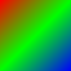
The colour stops are defined as a list of colours. The stops will be placed evenly throughout the axis of the gradient. For example, a gradient with two colour stops will put these at (0%, 100%). Three colour stops will be placed at (0%, 50%, 100%). If you would like to adjust the offsets manually, add it next the colour:
@import 'canvas';
html {
background: canvas(320, 100,
brush(
0, 0, // x1 and y1, the start point of the gradient
320, 0, // x2 and y2, the end point of the gradient
// y1 == y2 therefore this is a horizontal gradient
#f00 25%, #0f0, #00f 75% // colour stops, note the additional offsets
)
paint
);
}
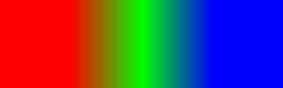
Radial Gradients
Radial gradients are defined by two circles with x, y and radius properties:
@import 'canvas';
html {
background: canvas(200, 200,
brush(
100, 100, 100, // outer circle, take up the entire surface
50, 50, 25, // inner circle, smaller in the top-left corner
#000, #ccc, #fff // colour stops
)
paint
);
}
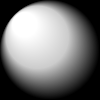
Drawing revised
The default line width for a new canvas is 1. You can change it by using the line-width function. The width will persist until you change it.
@import 'canvas';
html {
background: canvas(320, 100,
line-width(20)
move-to(20, 20)
line-to(200, 20)
stroke
reset
move-to(20, 50)
line-to(200, 50)
stroke
reset
move-to(20, 80)
line-to(200, 80)
stroke
);
}
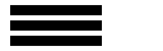
When lines are drawn, different rules can be applied at their endpoints. In the example above, all lines use the default butt style.
You can also choose between square and round:
@import 'canvas';
html {
background: canvas(320, 100,
line-width(20)
move-to(20, 20)
line-to(200, 20)
line-cap(butt) // default
stroke
reset
move-to(20, 50)
line-to(200, 50)
line-cap(square)
stroke
stroke
reset
move-to(20, 80)
line-to(200, 80)
line-cap(round)
stroke
);
}
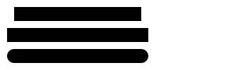
A line with square and round endpoint styles will have different length from a line with the default butt style.
Dash patterns
CSS has a very useful border-style property allowing you to control the appearance of a border, e.g., solid, dashed, dotted, etc.
Canvas lets you control the dash pattern so you can define any arbitrary outline style.
The relevant function is dash-pattern. When called with one argument, it resets the dash pattern and restores the original solid outline.
When called with two or more arguments, a new dash pattern is constructed and applied to all future stroke actions.
The arguments are the lengths of the alternating on/off segments:
@import 'canvas';
html {
background: canvas(320, 50,
move-to(10, 10)
line-to(310, 10)
dash-pattern(4, 2) // 4px drawn, 2px transparent, repeat
brush(red)
stroke
reset
move-to(10, 20)
line-to(310, 20)
dash-pattern(2, 1, 1, 2) // 2px drawn, 1px transparent, 1px drawn, 2px transparent, repeat
brush(green)
stroke
reset
move-to(10, 30)
line-to(310, 30)
dash-pattern(10, 10) // 10px drawn, 10px transparent, repeat
brush(blue)
stroke
reset
move-to(10, 40)
line-to(310, 40)
dash-pattern(none) // solid outline
brush(#f0f)
stroke
);
}
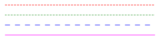
Fill Rules
If your shape is complex and potentially self-intersecting, fill rules determine how those intersecting regions will be treated.
The default rule is winding:
@import 'canvas';
html {
background: canvas(320, 100,
triangle(160, 10, 10, 90, 310, 90)
triangle(60, 50, 160, 90, 260, 50)
fill
);
}
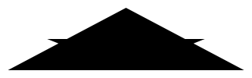
The first triangle is draw in order top-centre, bottom-left, bottom-right. The second triangle is draw in order top-left, bottom-centre, top-right.
If you change the order of the second triangle to bottom-centre, top-left, top-right you would get different results:
@import 'canvas';
html {
background: canvas(320, 100,
triangle(160, 10, 10, 90, 310, 90)
triangle(160, 90, 60, 50, 260, 50)
fill
);
}
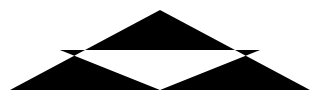
It is important to be very careful when intersecting paths. If you are unsure, split the path in individual shapes when possible.
The only other rule is even-odd and it can be set using the fill-rule function.
It is easier to understand as it only counts the total number of intersections regardless of the order in which the operations were carried.
If the total number is odd, the point will be filled. If the total number if even, the point will be left untouched.
@import 'canvas';
html {
background: canvas(320, 240,
rectangle(10, 10, 310, 100) // default rule is winding
rectangle(20, 20, 300, 90) // intersect with rectangle above
brush(red)
fill // entire region is filled since directions of the two rectangle match
reset
fill-rule(even-odd) // change rule
rectangle(10, 130, 310, 220) // first rectangle, total = 1
rectangle(20, 140, 300, 210) // intersection with first rectangle, total = 2
brush(blue) // only fills points with total = 1, i.e., excludes the second rectangle
fill
);
}
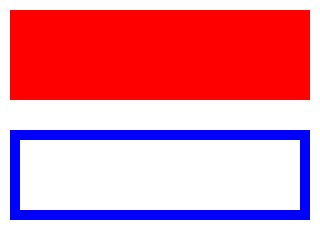
Transforms
Paths can be moved, scaled and rotated. When you begin a transformation, it will be applied to all future paths.
To avoid having transformations applied until the end of the canvas, use the save and restore functions.
save creates a backup of the transformation matrix currently in use (for a new canvas this would be the identity matrix, i.e., no transformation).
restore returns the transformation matrix to the backed up copy.
The two functions can also be used to save/restore brushes, fill rules and other options.
Canvas already ships with functions for drawing arcs and circles, but with no support for drawing an ellipsis. You can create one by applying transformations to a circle:
rotate- rotates paths by angletranslate- translates paths coordinates by (x, y)scale- scales paths by (width, height)
@import 'canvas';
html {
background: canvas(320, 200,
brush(#ccc)
paint
save
rotate(45)
translate(20, -80)
scale(1, 0.5)
circle(160, 100, 100)
restore
brush(red)
fill
brush(black)
stroke
);
}
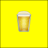
The order of transformations matters. In the example above, moving translate before rotate would yield different results.
Note the fill and stroke actions are placed after the restore action otherwise the line width for the stroke action will be scaled as well.
Reference (missing)
RDoc is available for the entire project.
For more information on Cairo, visit The Cairo graphics tutorial.
For a complete reference on Cairo methods, visit Pycairo documentation.